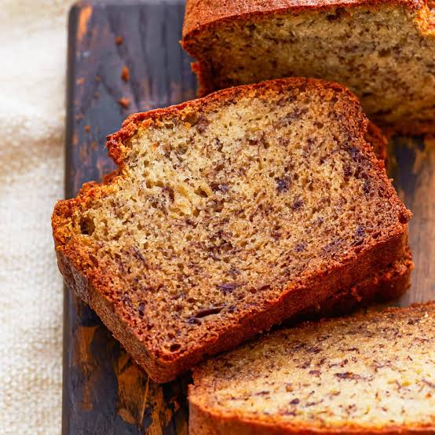

Banada Bread

Description
This simple banana bread is soft, moist, and full of sweet banana flavor. It's a great way to use ripe bananas and makes a delicious breakfast, snack, or dessert.
With only a handful of ingredients and easy preparation, this recipe is perfect for beginner bakers and can be enjoyed fresh or toasted with butter.
Ingredients
- 2 ripe bananas, mashed
- 2 cups all-purpose flour
- 1/2 cup sugar
- 1/4 cup melted butter
- 1 egg
- 1 tsp baking powder
Steps
- Preheat the oven to 350°F (175°C) and grease a loaf pan.
- Mash the bananas, then mix them with the sugar, melted butter, and egg.
- Stir in the flour and baking powder until just combined.
- Pour the batter into the prepared loaf pan and spread it evenly.
- Bake for 45–50 minutes, or until a toothpick inserted into the center comes out clean.
- Allow the banana bread to cool before slicing and serving.
Home